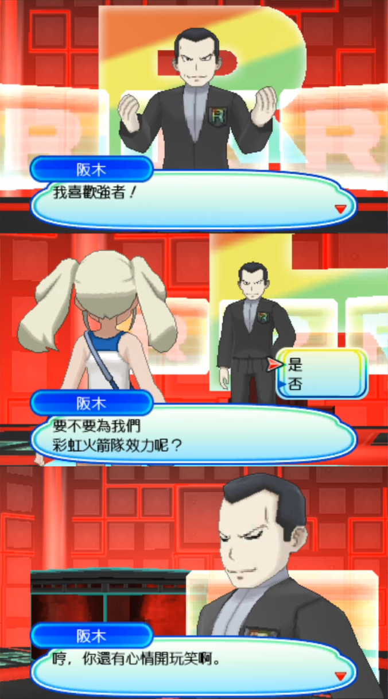

七月日常。
7-3 夜
我想，可能是我太贪心了。
我认识了太多的人，并擅自把他们都当作亲友。
我觉得我并不在意我在他们眼中是否是亲友，甚至是否算是朋友，但不，我在意他们不回我的消息。
我太过贪心了。
亲友有一两位不就完全足够了吗。
7-7 夜
我他妈的就不清楚自己是个没用的废物这个事实吗，用得着你来提醒我？
就知道划水，划，大学什么都没学会，问什么什么不会，连跟风找个工作都不会，落得现在这个下场。
也不知道是不是梁静茹给的我勇气让我毫无自知之明还胆敢去考什么研究生。
脑子有问题吧。
今天是七夕，真是个美丽浪漫的节日。要是在树上挂个写着愿望彩纸就能让愿望实现，那我会冒着倾盆大雨也要冲出去把我的愿望挂在基拉祈身上。
“希望我能立刻离开这个世界。什么方式都好。”
我不是第一次想死。如果我没真的死成，那也必然不会是我最后一次想死。
眼泪既不要钱，也没有用。可尽管哭没有任何作用，我还是会一个人躲在宿舍哭得面目全非。
另：谢谢你们在评论的安慰，只是我本不配被你们如此对待。
7-12 昼

7-18 昼
毫无悔改之意的，往熟人水杯里下药的赵南溪期望一段时间过后所有人就会忘记这一切。
那么我就在这个会留下永久编辑记录的地方，写下我的记忆。
至少，我不会忘。
7-18 夜
说来，不知道是神奇宝贝百科的记载错误还是游戏BUG。
神奇宝贝百科上的说明是“普通的极巨团体战的发起者必然能够捕获成功”，然而我已经失败了两次了。
不过失败的两次都有一个共同点，就是我误触了联网对战，然后立刻结束招募重新点开巢穴选择NPC对战。可能这是一个BUG？
不过以我和神奇宝贝百科之间的关系，我是不会去捡回以前使用的账号然后编辑这个事情的。如果有缘人看到那就有缘，没有的话那也无所谓，反正神奇宝贝百科怎么样都与我无关～
更新：确认了，即使没有这个操作也炸球了，不是游戏BUG，就是神奇宝贝百科的内容完全是错误的，并且我脸黑抓不到而已。
7-21 夜
I would like to share you with this best joke that from I was born to now, that is how Donald Trump got interviewed!
https://www.bilibili.com/video/BV1Yk4y1B7dB
7-27 朝
神奇宝贝百科只能用来查数据。
我当时看到剑盾的索德和西尔迪的描述说是“他们最终承认了主角的实力，但是对于谁才是真正英雄，仍持保留意见。”
但凡自己打过二周目主线，看过他们对话的都不会这样认为。
他们最后的对话是“不，我们认为真正的英雄是<玩家角色名>大人”，结合语境他们这句话的意思是想借着这个话题表达对角色的认可，从这里根本看不出他们还有什么持保留意见的意思。
唉，果然自从铃铛前辈离开神奇宝贝百科之后，这里的用户就都不会做简单的中文阅读理解了吗。